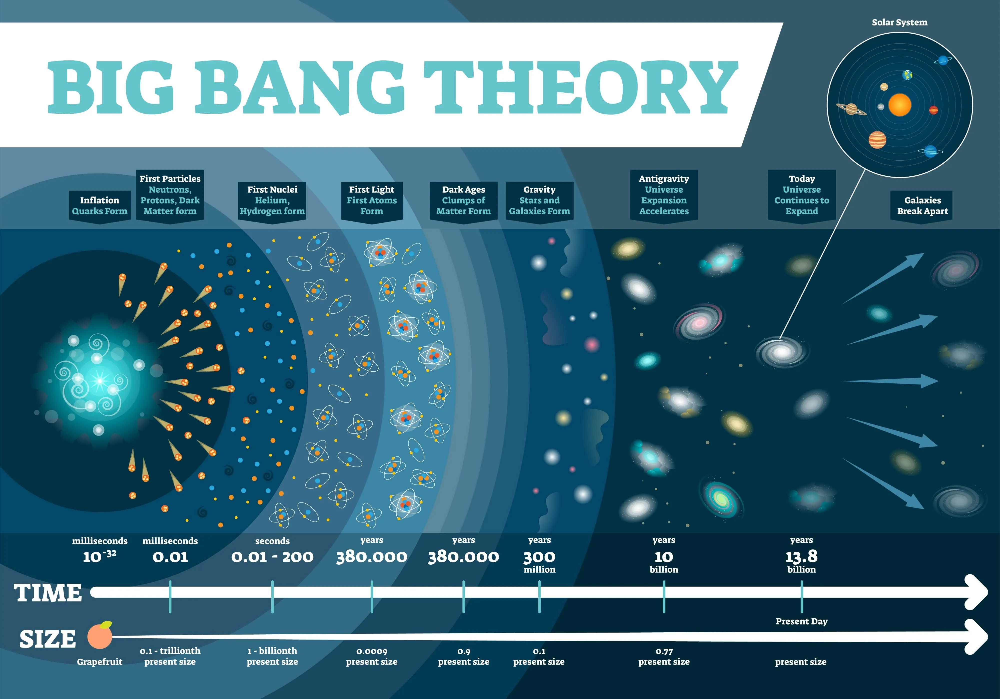

Hot water cools. Rooms drift into mess. Friendships fade out. Same physics, every time. Watching these patterns pushed me to rethink what "letting it go" actually means at the bottom of the stack.

The second law of thermodynamics states it plainly: an isolated system trends toward disorder on its own. Order and stability are temporary structures that systems build by spending energy.
Entropy
From the second law, this is the core metric pulling any system toward disorder. In an isolated system the disorder count climbs on its own, and the endpoint is heat death. Pure physics, no negotiation.
Negentropy
Schrodinger framed it as "life feeds on negentropy." Negentropy stands for the order and information content inside a system. It does not appear out of nothing. You have to do work and exchange energy with the outside to hold the structure stable.
Map that thermodynamic model onto human relationships and the decay starts to make sense.
Cut off the energy input (stop interacting) and the entropy law takes the wheel. Uncertainty rises. Doubt and noise grow on their own. Eventually the structure of the relationship breaks apart and the distance becomes the default.
Holding a relationship together is, at its core, the act of doing work.
Real conversation, shared understanding — all of it counts as energy input. The individual has to keep burning compute and attention to filter out noise, push back against the natural entropy creep, and maintain some structural order between two people inside the disorder.
Pulling this into personal psychology, the MBTI introvert/extrovert axis can be read as two different strategies for sourcing negentropy:
- I-type (introvert): Over-stimulation from the outside accelerates internal entropy. So the I-type cuts the input through physical isolation and solitude, recompiles the data internally, and gets cognitive order back online.
- E-type (extrovert): A fully isolated system stalls internal information flow (entropy climbs). The E-type plugs back in through external connections, runs high-frequency energy exchange with the environment, and that is how the system sets its boundary and finds dynamic stability.
The Thermodynamic Paradox of the AI Era
Large language models are an almost perfect demonstration of information negentropy at scale.
The model takes massive, disordered web data and compresses it into a parameter matrix with tight logical structure. Energy conservation does not forgive that, though. The process burns enormous compute and electricity, dumps waste heat into the physical environment, and accelerates entropy outside.
A clean trade: physical world disorder exchanged for digital order. The books balance.
Finding Dynamic Equilibrium Inside Imbalance
Entropy is the absolute background of the universe. Negentropy is the counter-strategy that living systems evolved to keep existing. Opposing forces, sure, and also the dynamic game that drives every system forward.
Chasing absolute order takes infinite energy. Pure "let it go" equals system shutdown. A rational survival model accepts that disorder is irreversible, then allocates energy strategically on top of that fact.
Conclusion
I cannot change the universe ending in heat death. I can change the rate at which my system decays.
Build dynamic equilibrium.
See the entropy creep for what it is. Hold tolerance and slack in the system. Keep doing work at the load-bearing points. Before the inevitable collapse, build short-lived structures that carry real meaning. Inside the limits of physics, that is the maximum the individual gets to take home.